Featured Projects
Work Integrated Learning Check-In System
A secure full-stack web application that streamlines Work Integrated Learning (WIL) for students, mentors, coordinators, and MICTSETA staff. Students record daily attendance, submit logbooks, and upload monthly timesheets, while mentors and administrators track progress through real-time dashboards with analytics. The system reduces errors, improves communication, and ensures efficient and secure management of student activities.


Python Flask MySQL HTML CSS Bootstrap JavaScript
Kings Trip Travel Website
A responsive website built for a travel agency showcasing luxury trips, travel packages, and booking inquiries.
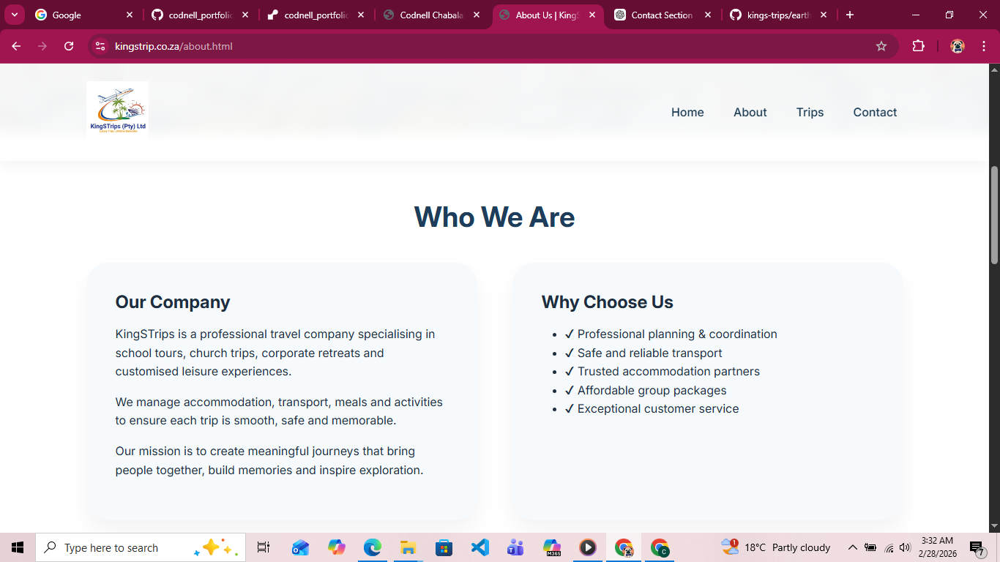
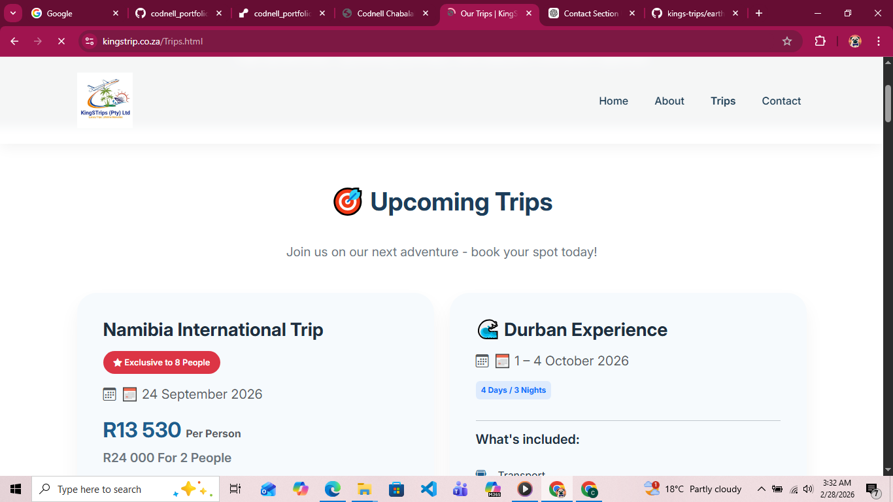
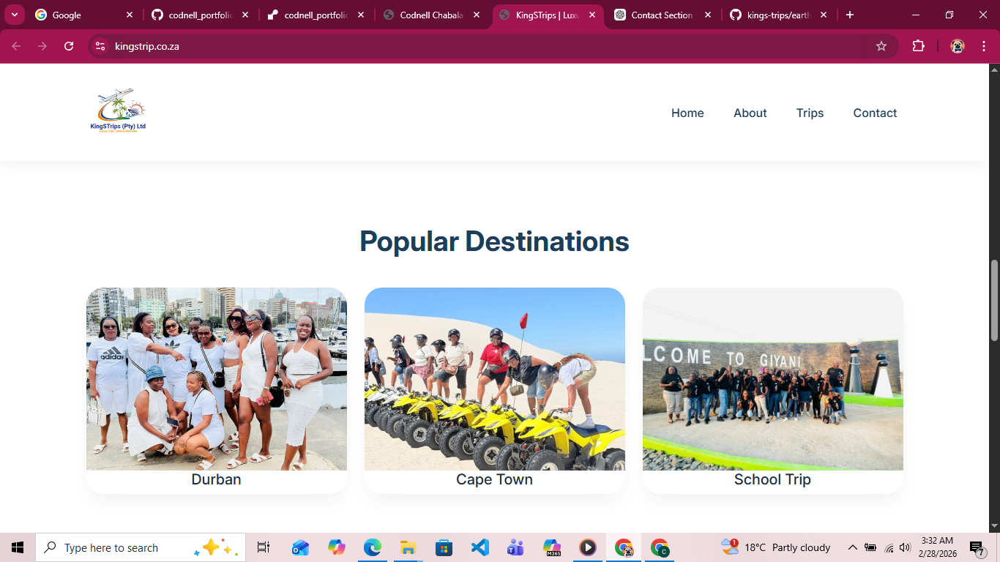
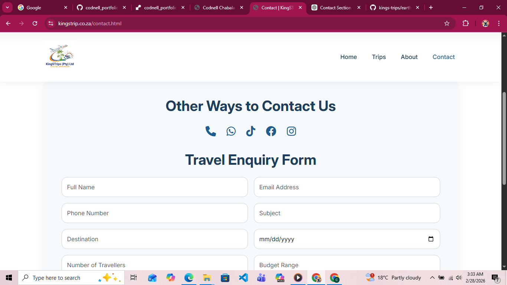
HTML CSS Bootstrap JavaScript
Leave Management System
A full-stack web application for managing employee leave requests. Admins can approve or reject requests, employees can apply for leave, and the system tracks total days and leave history.
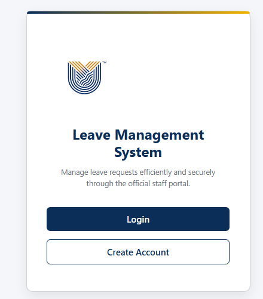
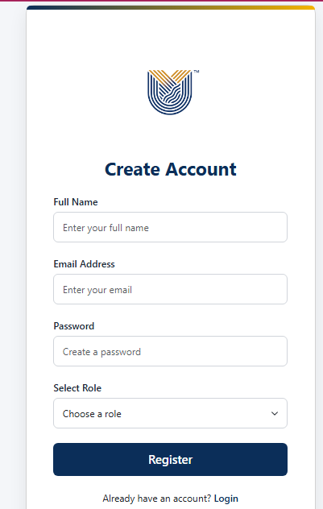
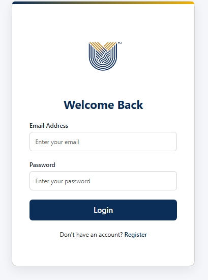
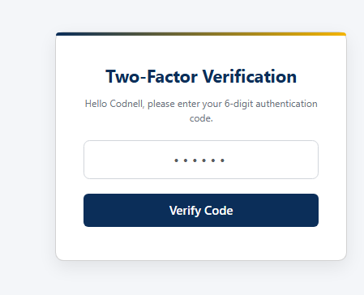
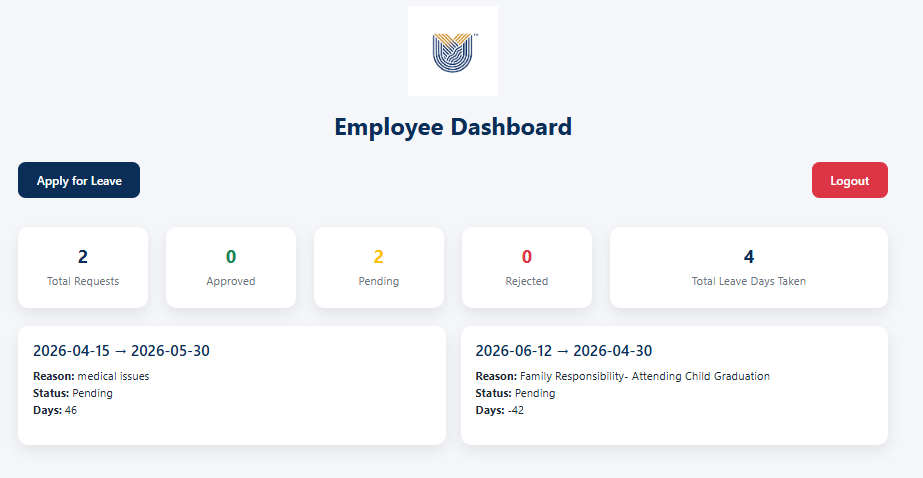
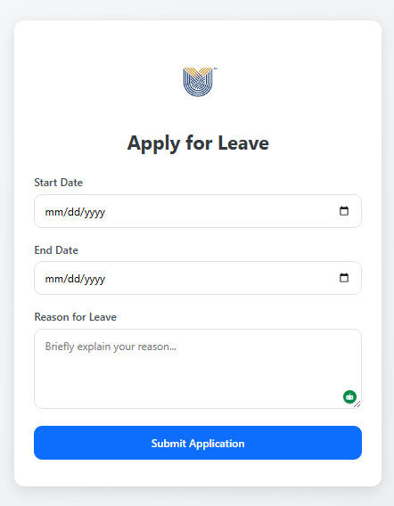
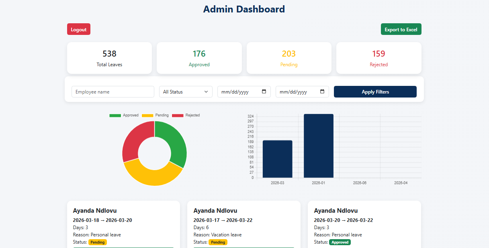
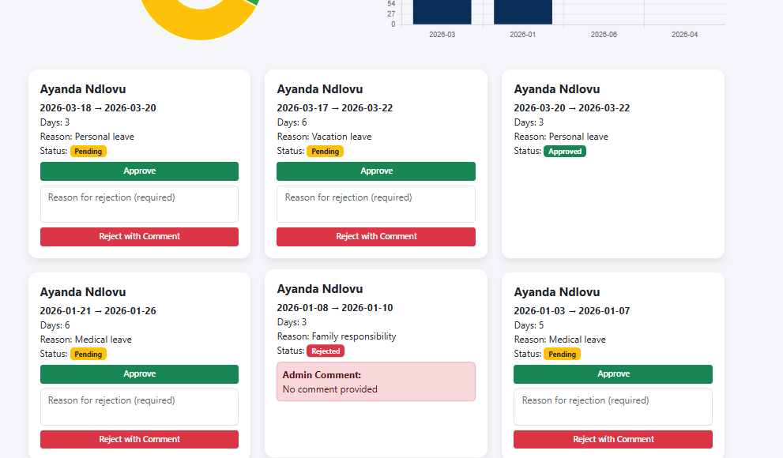
Python Flask SQLite Bootstrap JavaScript